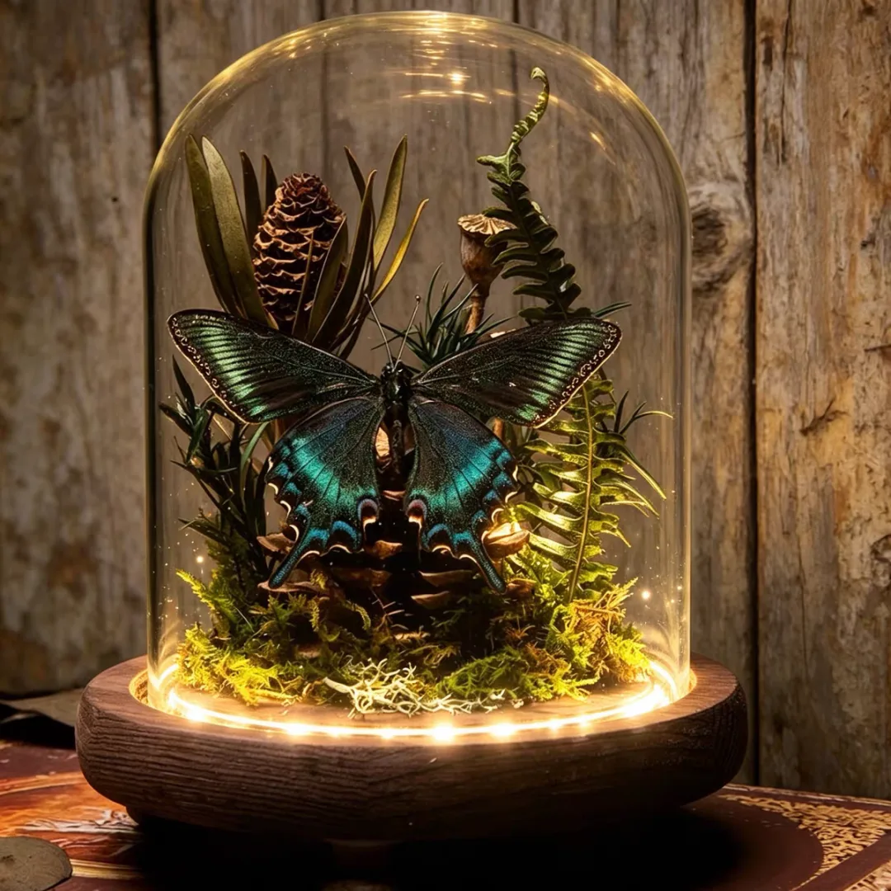
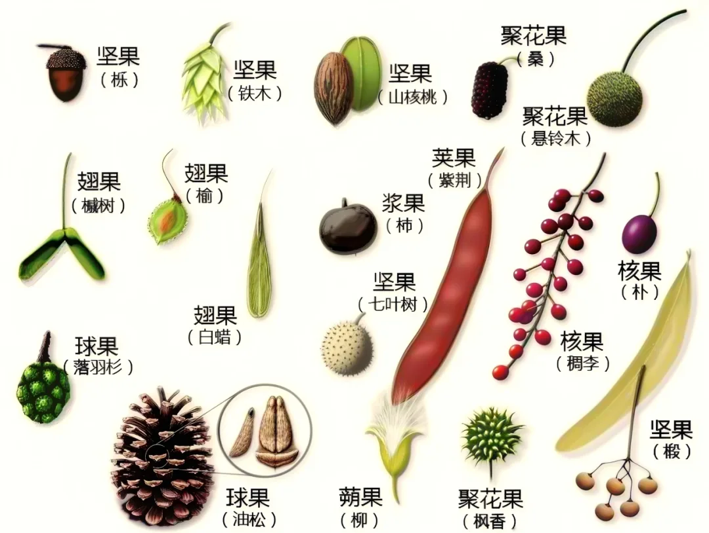
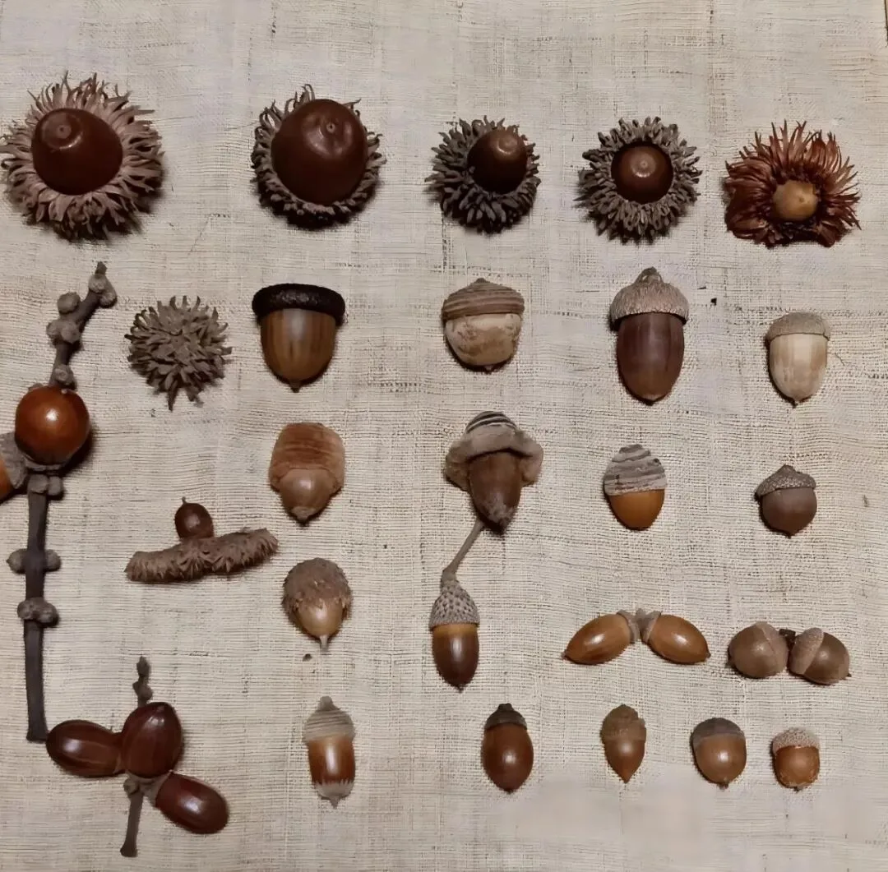
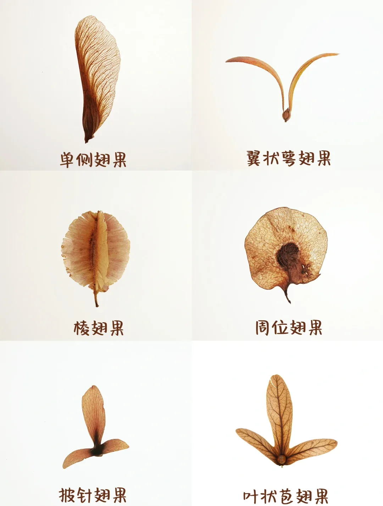

🐱 依依 | 嗨，小探险家！我是 依依 🐱 |
翅膀为什么会发光？松果是不是果子？哪种「板栗」千万不能吃？
跟着依依的地图走完四站，你就知道啦。
🔍
翅膀上的「彩色粉」是什么？
🐱 依依 | 摸过蝴蝶翅膀吗？手指上会沾一层彩色的「粉」哦。 |
任务 1 | 拿起放大镜 👆 点一下图片，镜头会钻进翅膀里 |
| 🧩 | 那层「粉」其实是成千上万片 小鳞片 |
| 🏠 | 像屋顶的瓦片一样，排得整整齐齐 |
| 📛 | 所以蝴蝶家族的学名叫 「鳞翅目」 |
👑
认识两位蝴蝶明星
先来见见「森林皇后」
任务 2 | 让大紫蛱蝶变色 👆 连点三下，帮它换个角度 |
| 🦎 | 蝴蝶界的 「变色龙」：换个角度就换颜色 |
| 🍯 | 口味独特：不爱花蜜，偏爱喝 发酵的树汁 |
| 🔬 | 上面的变色是模拟效果，现场看实物更神奇 |
🛡
打不过？那就骗过去！
昆虫界的生存大智慧
🐱 依依 | 小蝴蝶打不过小鸟，它们有两个绝招： |
任务 3 | 落叶堆里找蝴蝶 👆 一片一片点开落叶，把它找出来 |
💡 找到了吗？它叫 枯叶蛱蝶。合上翅膀，背面就像一片带「叶脉」的枯叶。这个本领叫 「拟态」。
任务 4 | 大眼睛吓跑小鸟 👆 小鸟飞来啦！点一下亮出「大眼睛」 |
💡 这是 猫头鹰环蝶。翅膀上的大眼斑，让小鸟以为遇到了猫头鹰！
🦋
是蝴蝶，还是蛾子？
任务 5 | 三道判断题 👆 点你觉得对的答案 |
🌱
蝴蝶的一生
🤓 冷知识 | 你知道吗？北美的 帝王斑蝶 每年要飞几千公里去过冬， |

🐱 依依 | 听完蝴蝶的故事，就要动手啦！ |
💡
书桌上的小博物馆

下午的捡秋课，还能把捡到的宝贝装进「格子标本框」
🐱 依依 | 走在路上就能用的 辨识秘籍 来啦！ |
任务 6 | 拆开果实盲盒 👆 一个一个点开，找出「冒牌货」 |

生活中常见的果实类型
任务 7 | 松杉柏三兄弟 👆 看叶子，猜猜它是谁 |
💡 口诀：松针扎成束，杉叶排两排，柏叶像鳞片！
🎩
戴「小帽子」的橡子
| 🎩 | 橡子的帽子叫 壳斗，家族就叫 壳斗科 |
| 🌳 | 西山有栓皮栎、槲栎、槲树……帽子各不相同 |
| 🐿 | 它们是松鼠、花鼠过冬的 粮仓 |

任务 8 | 种子飞行大赛 👆 点一下，放飞元宝枫的翅果 |
💡 元宝枫的种子长着一对薄翅膀，叫 翅果。风一吹，就像迷你直升机一样转着圈飞走。

还有这些会「飞」的种子
任务 9 | 安全小卫士 👆 选一个答案吧 |

| 👩🏫 | 果果老师 北京林业大学 动物学硕士 |
| 🌿 | 资深自然教育讲师，教博物学 八年 |
| 💬 | 最会用小朋友听得懂的话，回答每一个「为什么」 |
🌿 果果 | 「热爱自然的人，对生活总是怀有敬意。」 |
⏰
活动流程
| 🦋 | 13:30 - 14:30 蝴蝶科普与生态标本课 |
| 🌰 | 15:00 - 16:00 西山捡秋 · 自然标本课 |
📋
活动信息
| 📅 | 时间 2026 年 10 月 24 日（周六） |
| 📍 | 地点 北京西山国家森林公园 · 拾光营地 |
| 💰 | 价格 168 元 / 组（建议 1 大 1 小） |
| 👧 | 适合 5 岁及以上，爱自然、爱手工的亲子家庭 |
📲
扫码咨询报名
添加微信「点点 | 西山拾光营地」
🐱 依依 | 北京的秋天走得很快 🍂 |
🏅
最后一关：领证书
一路点到这里，你已经通关啦
🍂 🍁 🍂
内容整理自「西山拾光营地」秋日活动推文